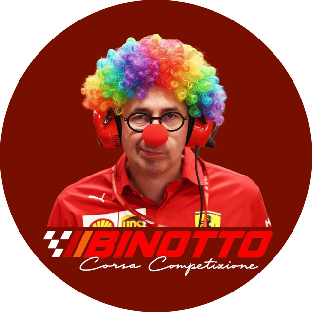

Cinema Streamer
TV live in sale condivise

BinottolandApri Binottoland in Telegram per accedere.
Nessuna partita. Apri il primo tavolo.
Collegamento al cinema…
Collegamento alle lavagne…
Da 2 a 10 giocatori, sette carte a testa. Abbina colore, numero o simbolo. Dopo aver pescato puoi giocare solo la carta appena pescata. Il +4 è consentito se non hai il colore attivo e può essere contestato. Quando resti con una carta, dichiara UNO. A ogni manche chi finisce le carte incassa i punti degli avversari. Vince chi arriva a 500.
Nessuna vittoria
Nessuna vittoria
Nessun punteggio
TV live in sale condivise
Lavagna condivisa a gessetti
Guida il regionale sulla Linea dei Due Laghi · 6 fermate
Il manageriale della community · 2 piloti, 13 GP, gare automatiche
Unisci i numeri e migliora il tuo record
Gira le tessere e porta l'acqua dal rubinetto al vaso · gocce d'oro da raccogliere
Atterra sulla Luna · 5 livelli
Disegna la pista e corri in 3D · contro l'IA o sullo stesso telefono
Sala giochi 3D · palla 8, palla 9, snooker, carambola, 5 birilli e boccette · contro il computer, sullo stesso telefono o online
10 livelli da superare in ordine
Console rétro · 5 modalità
Scacchi · 2 giocatori
2 giocatori · prese obbligatorie
2 giocatori
2–10 giocatori · mani private
2–4 giocatori · leggii privati
2–4 giocatori · a coppie in quattro
2 giocatori · flotte private
2–4 giocatori · a coppie in quattro
5 giocatori · asta e socio segreto
Anteprima dal vivo
Nessuna partita archiviata.
Versione
Il server verifica i dati firmati da Telegram per accedere con il tuo account.
Le comunicazioni sono cifrate tramite HTTPS e WSS. Mosse e permessi vengono controllati sul server; le credenziali del bot non vengono inviate ai giocatori.
La Lobby mostra nome, username e foto forniti da Telegram. La chat è condivisa con gli utenti dell’app e conserva gli ultimi 100 messaggi.
Binottoland confronta le regole dei giochi da tavolo con i regolamenti di riferimento e verifica le mosse sul server. Si tratta di una verifica interna, senza certificazione degli enti o degli editori citati.
Collegamento…
Nessun turno.
Ultimi 160 eventi di questa sessione. Nessun token o credenziale.
Scarabeo in singolo usa un piccolo lessico italiano: l’AI propone e convalida solo le parole incluse. Puoi passare se non trovi una parola.
Accettando, la partita termina in parità: mezzo punto a testa. Se rifiuti, la partita continua. Una nuova mossa annulla la proposta.
La patta conclude la partita senza vincitori: mezzo punto a testa. L’avversario può accettare oppure rifiutare.
La partita continua finché la proposta non viene accettata. Una nuova mossa annulla la proposta in attesa.